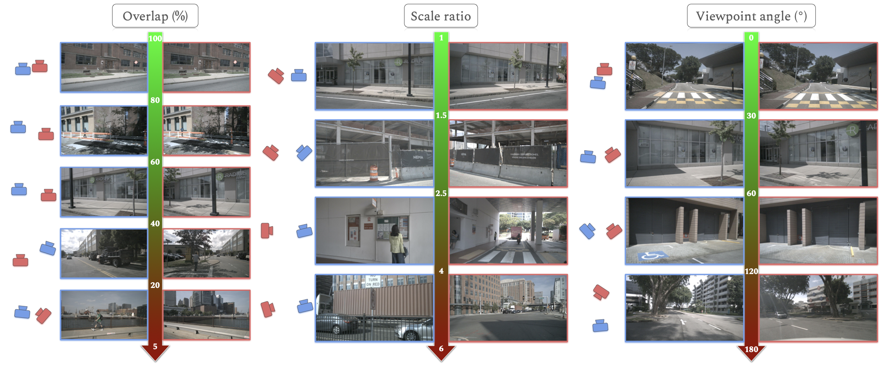
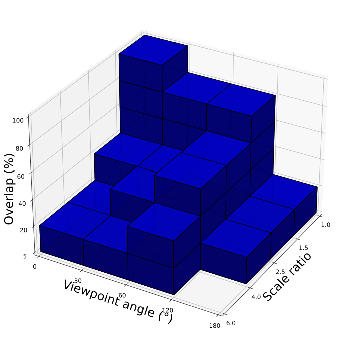
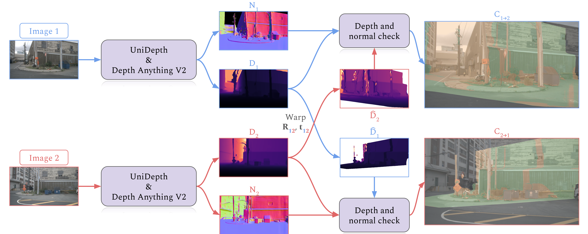

Abstract
Camera pose estimation is crucial for many computer vision applications, yet existing benchmarks offer limited insight into method limitations across different geometric challenges. We introduce RUBIK, a novel benchmark that systematically evaluates image matching methods across well-defined geometric difficulty levels. Using three complementary criteria—overlap, scale ratio, and viewpoint angle—we organize 16.5K image pairs from nuScenes into 33 difficulty levels. Our comprehensive evaluation of 14 methods reveals that while recent detector-free approaches achieve the best performance (>47% success rate), they come with significant computational overhead compared to detector-based methods (150–600ms vs. 40–70ms). Even the best performing method succeeds on only 54.8% of the pairs, highlighting substantial room for improvement, particularly in challenging scenarios combining low overlap, large scale differences, and extreme viewpoint changes.

RUBIK benchmark overview. Image pairs spanning three difficulty criteria: scene overlap, scale ratio, and viewpoint angle difference. The benchmark contains 16.5K image pairs across 33 difficulty levels and is used for comprehensive benchmarking of 14 methods.
At a Glance
Approach
RUBIK is built on images from nuScenes, a large-scale autonomous driving dataset. We carefully lift the original 3-DoF ground-plane poses to full 6-DoF using COLMAP, then generate dense co-visibility maps for each image pair by warping metric depth maps (UniDepth) and surface normals (Depth Anything V2) across views. These maps allow us to compute three complementary geometric criteria for each pair:
Co-visible pixel ratio
Camera distance ratio
Line-of-sight angle
Each criterion is quantized into bins, forming a 3D grid of difficulty levels. We populate each valid cell with 500 image pairs, yielding 33 levels and 16.5K pairs spanning the full spectrum of geometric challenges.

3D grid organization. Each axis represents one geometric criterion (overlap, scale ratio, viewpoint angle). While the binning strategy theoretically creates 80 combinations, only 33 are physically realizable—for instance, high overlap with small scale ratio rarely produces large viewpoint angles.

Dense co-visibility map estimation. Using normal and depth maps along with relative camera poses, we warp depth maps between views and apply geometric consistency checks to classify pixels as co-visible, occluded, or outside the field of view.
Benchmark Results
We evaluate 14 image matching methods using a standardized pipeline: image matching with default parameters, essential matrix estimation via MAGSAC++, and scale recovery using monocular depth. A pose is successful when rotation error < 5° and translation error < 2m.
| Method | Avg. Rank ↓ | Success (%) | Time (ms) |
|---|---|---|---|
| Detector-based methods | |||
| ALIKED + LightGlue | 5.3 | 36.8 | 45 |
| DISK + LightGlue | 5.4 | 35.9 | 69 |
| SuperPoint + LightGlue | 6.1 | 35.7 | 43 |
| SIFT + LightGlue | 7.3 | 33.1 | 194 |
| DeDoDe v2 | 8.6 | 30.4 | 282 |
| XFeat + LighterGlue | 9.0 | 30.1 | 43 |
| XFeat* | 12.5 | 15.1 | 82 |
| XFeat | 13.1 | 14.2 | 54 |
| Detector-free methods | |||
| DUSt3R | 2.4 | 54.8 | 257 |
| MASt3R | 2.5 | 53.6 | 173 |
| RoMa | 2.7 | 47.3 | 614 |
| ELoFTR | 9.5 | 26.6 | 124 |
| ASpanFormer | 9.8 | 24.8 | 108 |
| LoFTR | 10.8 | 24.9 | 185 |
Key Findings
- Detector-free dominance. The top three methods (DUSt3R, MASt3R, RoMa) are all detector-free, suggesting that direct dense matching is more robust across varying geometric conditions.
- Speed–accuracy trade-off. While detector-free methods achieve better accuracy, they require more computation (150–600ms vs. 40–70ms). Detector-based methods like ALIKED + LightGlue offer competitive performance at a fraction of the cost.
- Matching strategy matters. The significant gap between XFeat variants highlights the critical importance of the matching strategy, even with the same feature detector.
- Room for improvement. Even the best method (DUSt3R) fails on over 45% of pairs, especially under low overlap, large scale differences, and extreme viewpoint changes—pointing to clear directions for future research.
Citation
@inproceedings{loiseau2025rubik,
title={RUBIK: A structured benchmark for image matching across geometric challenges},
author={Loiseau, Thibaut and Bourmaud, Guillaume},
booktitle={Proceedings of the Computer Vision and Pattern Recognition Conference},
pages={27070--27080},
year={2025}
}
Acknowledgments
This project has received funding from the Bosch Research Foundation (Bosch Forschungsstiftung), and was granted access to the HPC resources of IDRIS under the allocation 2024-AD011014905R1 made by GENCI.